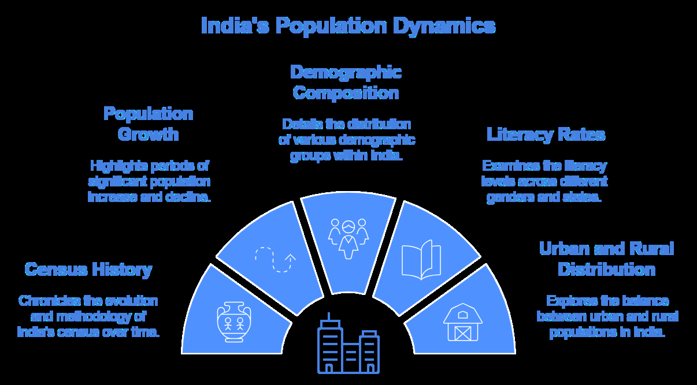
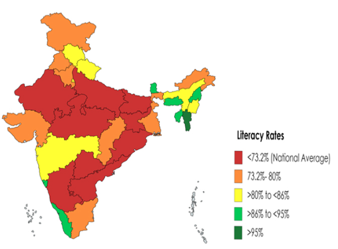
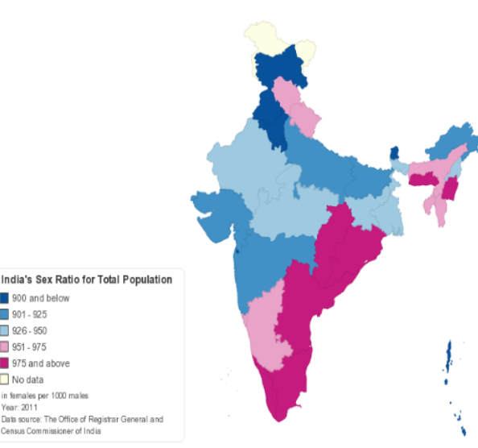

34 Census 2011
Census 2011
The Census 2011 is the 15th National Census survey conducted by the Census Organization of India.
Mr. C. Chandramouli is the Commissioner & Registrar General of the Indian 2011 Census. The 2011 Indian National Census was conducted in 2 phases - house listing and population.
The national census survey covered all 28 states of the country and 7 Union territories including 640 districts, 497 cities, 5767 tehsils & over 6 lakh villages.

Important points @ Census 2011
Census was introduced in India during the era of Lord Mayo in the year 1872. It came into force from 1881. The first-ever Census was carried out in Sweden in the year 1749. The motto of Census 2011: “ Our Census, Our future ”.
Census 2011 was held in two phases:
➢ House Listing & Housing Census (April to September 2010)
➢ Population Enumeration (9th to 28th February 2011)
Number of Administrative Units in Census 2011
➢ States/UTs: 35 ➢ Districts: 640 ➢ Sub-districts: 5,924 ➢ Towns: 7,936 ➢ Villages: 6.41 lakh ★ The responsibility of conducting the decennial Census rests with the Office of the Registrar General and Census Commissioner, India under the Ministry of Home Affairs, Government of India ★ In India, the 15th Census was carried out in 2011. It was the 7th Census of Independent India ★ According to the Census Analytical Report, India has the highest youth population, and in the year 2020, the average age of Indians will be 29 years.
★ Increase in population from 2001 to 2011: 181 Million.
★ The people residing in Urban areas constitute 31.2% of the Indian Population (around 37 crores), while the Rural Area comprises 68.8% of the Indian Population.
★ According to the Census 2011, the highest percentage of the Rural Population resides in Himachal Pradesh.
★ According to the Census of India 2011, the population of India is 1210,569,573 (121crore) comprising of 623,121,843 (62.3 crore) males and 587,447,730(58.7 crore)
★ As per Census 2011, sex ratio of India is 943 females per 1000 males.
★ The effective literacy rate for India has gone up from 64.83 percent in 2001 to 74.04percent (census 2011) ★ The population density of India has gone up to 382 persons per square kilometer in 2011 as compared to 325 persons per square kilometer in 2001.
Facts about the 2011 Census
Literacy rate : A person is considered literate if he/she is aged 7 years and above, and can
both read and write with understanding in any language is treated as literate.
The effective literacy rate for India has gone up from 64.83 percent in 2001 to 74.04 percent (census 2011) showing an increase of 9.21 percentage points.
The top 10 states/UT with the highest literacy rates are

| Rank | State/UT | Literacy Rate (Approx.%) |
|---|---|---|
| 1 | Kerala | 94.00 |
| 2 | Lakshadweep | 91.80 |
| 3 | Mizoram | 91.30 |
| 4 | Goa | 88.70 |
| 5 | Tripura | 87.20 |
| 6 | Daman & Diu | 87.10 |
| 7 | Andaman & Nicobar | 86.60 |
| 8 | Delhi | 86.20 |
| 9 | Chandigarh | 86.00 |
| 10 | Tamil Nadu | 85.80 |
Sex Ratio: As per Census 2011, the sex ratio of India is 943 females per 1000 males.
In rural areas, there are 949 females to 1000 men, while in urban areas there are 929 females to 1000 males. Rural India has 21,813,264 more males and urban India has 13,872,275 more males than females.
India’s Sex Ratio has improved from 933 in 2001 to 943 in 2011. The top 10 states/UT with the highest sex ratio are:
| Rank | State/UT | Sex Ratio (Females per 1000 Males) |
|---|---|---|
| 1 | Kerala | 1,084 |
| 2 | Puducherry | 1,037 |
| 3 | Tamil Nadu | 996 |
| 4 | Andhra Pradesh | 993 |
| 5 | Chhattisgarh | 991 |
| 6 | Meghalaya | 989 |
| 7 | Manipur | 985 |
| 8 | Telangana | 985 |
| 9 | Odisha | 979 |
| 10 | Mizoram | 976 |

Top 10 Most Populous States:
| Rank | State/UT | Population (in Crores) |
|---|---|---|
| 1 | Uttar Pradesh | 20 |
| 2 | Maharashtra | 11 |
| 3 | Bihar | 10 |
| 4 | West Bengal | 9 |
| 5 | Madhya Pradesh | 7 |
| 6 | Tamil Nadu | 7 |
| 7 | Rajasthan | 7 |
| 8 | Karnataka | 6 |
| 9 | Gujarat | 6 |
| 10 | Andhra Pradesh | 5 |
Top 10 States with the highest SC population
The date given below is related to SC’s only:
| Rank | State/UT | SC Population (%) |
|---|---|---|
| 1 | Punjab | 32 |
| 2 | Uttar Pradesh | 21 |
| 3 | Rajasthan | 17 |
| 4 | Madhya Pradesh | 17 |
| 5 | Haryana | 21 |
| 6 | Bihar | 16 |
| 7 | West Bengal | 23 |
| 8 | Tamil Nadu | 20 |
| 9 | Odisha | 16 |
| 10 | Andhra Pradesh | 17 |
India Religion-wise population
Population Growth rate of various religions has come down in the last decade (2001-2011). Hindu Population Growth rate slowed down to 16.76 % from the previous decade's figure of 19.92% while Muslims witnessed a sharp fall in growth rate to 24.60% (2001-2011) from the previous figure of 29.52 % (1991-2001).
Such a sharp fall in the population growth rate for Muslims hasn't happened in the last 6 decades. Christian Population growth was at 15.5% while the Sikh population growth rate stood at 8.4%.
The most educated and wealthy community of Jains registered the lowest growth rate in 2001-2011 with a figure of just 5.4%.
Facts that are most Frequently asked in Exams
Total Census till 2024: 15 Total after Independence: 7 National Population Policy: 2000 2011 Census in 2 Phases covering 28 states, 8 UTs, and 640 Distt. The theme of the 2011 Census: Our Census Our Future. First Census of a City: In 1830, Dhaka by Henry Walter (Father of Census in India). Population in 1901: 238.4 million. Population in 2001: 1029 million. Population in 20011: 1.21 Billion. 1911-1921: Period of Negative Growth. 1961-1971: Period of Maximum Growth. 1951-1981: Period of Population Explosion. 1971: Concept of Standard Urban Area. Population of SC’s 16.6% and ST’s 8.6%. The density of the Indian population is 382/sqkm. UT with maximum and minimum population density: Delhi & Andaman and Nicobar Islands Sex Ratio: 943 in adults and 919 in children. Death Rate: 7.2 per 1000/ State with zero Population of SC: Nagaland. State with negative Growth Rate: Nagaland. The state with the highest Population Growth is Meghalaya followed by Arunachal Pradesh and Bihar.
Total literacy Rate: 74.04%. Literacy rate among Males: 82.14%. Literacy rate among Females: 65.46%. Literacy Gap between Males and Females: 16.68%. The highest literacy rate: is 94% in Kerala and the Lowest is 61.8% in Bihar. The highest Literate district is Serchip (Mizoram) and the lowest is Alirajpur (MP). The literacy rate in SC is 66.1% and in ST is 59%. The highest Urban population is in Goa. The population that lives in Rural Areas is 68.8%. The absolute increase in population is 18.19 crore which is 17.7%. The largest Buddhist/Jain population is in Maharashtra. The population increase in absolute value is the maximum in: ➢ Urban: Maharashtra >Uttar Pradesh > Tamil Nadu.
➢ Rural: Uttar Pradesh > Bihar > West Bengal.
➢ Goa: if we talk in percentage, not in absolute values.
National workforce, Males: 53.26% and Females: 25.51%. The workforce in Sectors, Primary: 54.6% and Secondary: 24.3%. Below the Poverty Line: 21.9% which consists of Urban: 13.7% and Rural: 25.7%